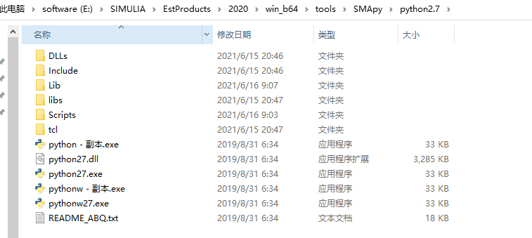
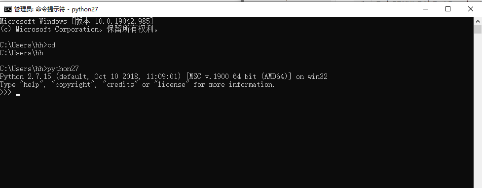
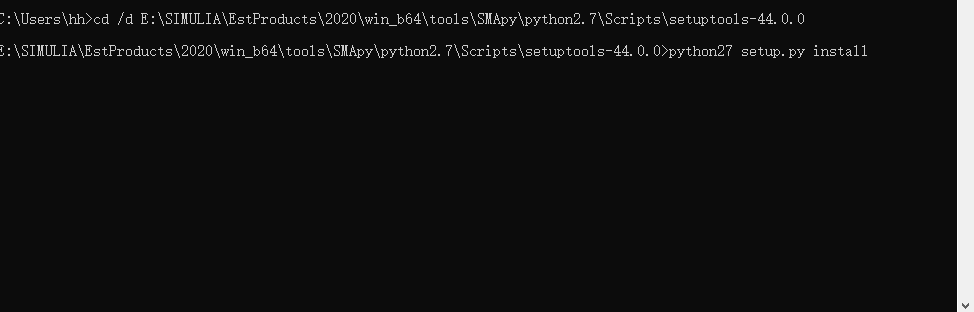
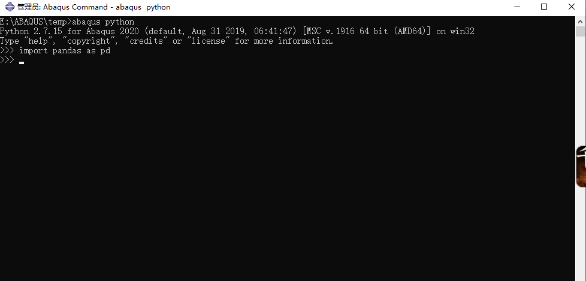

刚接触abaqus基于python的二次开发，在利用脚本写程序时往往需要使用第三方库，踩坑无数后在此记录。其中abaqus是内置numpy包的，所以其他依赖于此包的库函数如pandas，scipy等都需要基于此进行版本匹配和安装，abaqus2018的numpy版本为1.6.2，abaqus2020的版本为1.15.4，查看版本的方法：
1 | import numpy |
修改python名称
进入
1 | E:\SIMULIA\EstProducts\2020\win_b64\tools\SMApy\python2.7 |
根据自己的安装路径选择合适的文件夹，并将其中的python.exe和pythonw.exe复制备份。修改原有的python.exe和pythonw.exe为python27.exe和pythonw27.exe，如下图所示：

添加系统环境变量Path
1 | E:\SIMULIA\EstProducts\2020\win_b64\tools\SMApy\python2.7 |
这两步的目的是将python27引入到系统环境变量中，后续安装第三方库时可以直接利用python27（即abaqus下的python）进行安装，这样可以将包安装在abaqus中。
打开cmd进行验证，输入python27

安装第三方库
注意第三方库不是独立的，尤其在手动安装时，一般需要先安装setuptools这个库，具体版本对应关系可以通过自己建立env并设置对应numpy版本后利用conda安装进行查看。这里2020的setuptools版本是44.0.0，pandas版本为0.24.2，注意！此处一定要安装numpy版本找到对应的版本进行安装。
首先将压缩包放在scripts的目录下，然后切换目录到下载的安装包中，利用下面命令安装
1 | python27 setup.py install |

注意此处，安装pandas后出现报错，需要按照提示重新进行编译。
测试是否安装成功
打开abaqus command，输入abaqus python后，测试安装的第三方包是否安装成功，如下图所示
